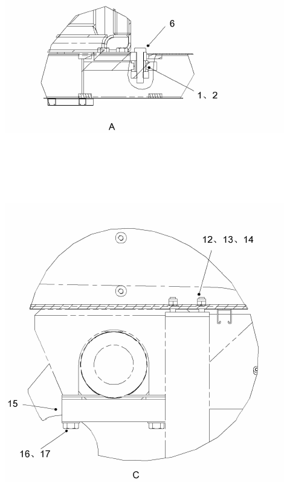

Описание и расположение
Описание и расположение
Кабина представляет собой металлическую сварную конструкцию, установленную на левой стороне платформы. В кабине установлены управляющие устройства и приборы, необходимые для эксплуатации автомобиля.
Управление
Кабина обеспечивает оператора просторной и комфортной обстановкой. Широкие окна обеспечивают хороший обзор во всех направлениях. Двери с обеих сторон обеспечивают удобство доступа. Съемная приборная панель облегчает техническое обслуживание, улучшая условия доступа кабины.
Узел внешнего конструктивного элемента включает в себя необходимую интегральную структуру предотвращения опрокидывания.
Ремонт и регулировка
Регулярно проверить кабину на наличие повреждений. По требованиям отремонтировать и замените. Проверить каждую деталь по инструкциям соответствующего модуля.
Опасно
Все давления в гидравлическом тормозе и рулевом аккумуляторе должны быть освобождены перед снятием гидравлических линий.Демонтаж (см. рис. 2)
Кабина может быть снята следующим образом:
1. Остановить карьерный самосвал в безопасном месте, кроме использования фрикционной системы торможения, еще нужно подложить клинья под колеса.
2. Снять кузов, по инструкции в разделе 020 - Структурные компоненты, или поднять кузов до максимального положения и закрепите его.
3. Использовать соответствующий ручной сливной клапан для слива остаточного давления масла во всех гидравлических тормозах ив рулевом аккумуляторе.
4. Проверить все детали, убедиться в том, что не было остаточного гидравлического давления.
5. Снять положительный и отрицательный провода с аккумулятора. Обеспечите изоляцию и безопасность.
6. Снять все электрические и гидравлические соединения между кабиной и платформой. Закрыть и вставить все гидравлические и пневматические соединения. Отметить каждое соединение, чтобы обеспечить правильную сборку.
7. Снять сварной шов, который крепит болт (6) к платформе.
8. Закрепить кабину так, чтобы кабина не двигалась при снятии подставки.
9. Выверить болты (6). Когда сняты нажимные платы (3, 4 и 5), отметить места снятия для удобства установки.
10. Установить подъемное оборудование для подъема кабины.
11. Использовать распорки или другие опорные соединения и мостовые краны. Регулировка стропов гарантирует, что канаты имеют одинаковую силу тяги и не будут ослабляться. Осторожно поднять платформу, Очистить раму и нижний опорный материал.
Примечание: опорный материал должен поддерживать кабину в точке крепления и быть закреплен для предотвращения движения.
Проверка и ремонт
Кабина может быть отремонтирована следующим образом:
1. Проверить все основания, стрелы и кронштейны на наличие повреждений и износа. По требованиям отремонтировать и замените.
2. Проверить все двери и петли на наличие износа и повреждений, смазка нормальная ли, по требованиям отремонтировать и замените.
3. Устранить любые повреждения конструкции. Общие инструкции по сварке на месте приведены в разделе 200 - Другие. Подробные инструкции и рекомендации доступны от NHL. Конструкция противоскольжения оболочки кабины должна быть отремонтирована в строгом соответствии с процедурой.
4. Проверить подушку (1) и опору (2) на наличие износа и повреждений на платформе. По требованиям отремонтировать и замените.
Установка (см. рис. 2)
Кабина может быть установлена следующим образом:
1. Перед установкой убедиться, что подушка (1) и опора (2) платформы не изношены или не повреждены. По требованиям отремонтировать и замените.
2. Подключить стропы подъемного инструмента. Рекомендуется использовать распорки или соответствующие алитьрнативы. Отрегулировать длину каждой стропы так, чтобы четыре веревки имели одинаковое натяжение и не провисали. Убедиться, что длина стропы достаточна для подъема кабины, не затрагивая или повреждая монтажные компоненты.
3. Поднять кабину и поместите ее в соответствующее положение на платформе. Выравнивайте монтажную площадку кабины с соответствующей позицией на платформе.
4. Установить болты (6) и нажимную плату (3, 4 и 5). После установки затяните крутящий момент до 500 футов • фунт (675 Nm).
5. Снять подъемную стропу.
6. Соединить все снятые электрические, гидравлические и пневматические линии.
7. Проверить все выполняемые функции в соответствии с соответствующей процедурой.
Спецификация
1
Амортизационная прокладка
8
Палец
15
Крышка
2
Подставка
9
Прижимная пластина
16
Болт
3
Прижимная пластина
10
Болт
17
Прокладка
4
Прижимная пластина
11
Гайка
5
Прижимная пластина
12
Болт
6
Болт (класс 8)
13
Прокладка
7
Шатун для защиты от опрокидывания
14
Гайка
Рис. 1 Установка кабины 1
Рис. 2 Установка кабины 2
Кабина - кабина и ее установка
090-0000
Кабина - кабина и ее установка
090-0000
2
3
Кабина - кабина и ее установка
090-0000
1
Кабина и ее установка
090-0000
Кабина и ее установка
090 - 0000
4
Иллюстрации
